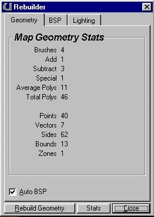
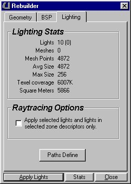
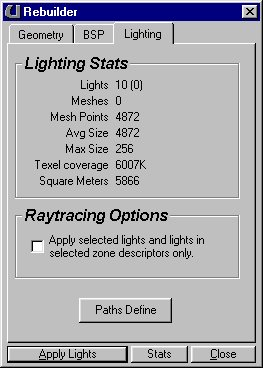

Rebuilder

This is the Rebuilder window. Some of the numbers in this window will be useful later on when you have more experience with level editing. These properties won't update until you rebuild.
The easiest (and best) way to rebuild is to simply click the Rebuild Geometry button. If you leave everything else at its default setting it will automatically rebuild the geometry, run the BSP and render the lighting. If Auto-BSP is checked in the Geometry window, then it will automatically run, and if Auto-Lighting is checked in the BSP window then it will automatically run. The BSP "cuts up" the polygons for rendering, and Lighting renders the lighting for the level. There are individual settings for each of these accessed by the tabs at the top of the window, but it is best to just leave them alone.
These are the other tabs in the Rebuilder window.
 
